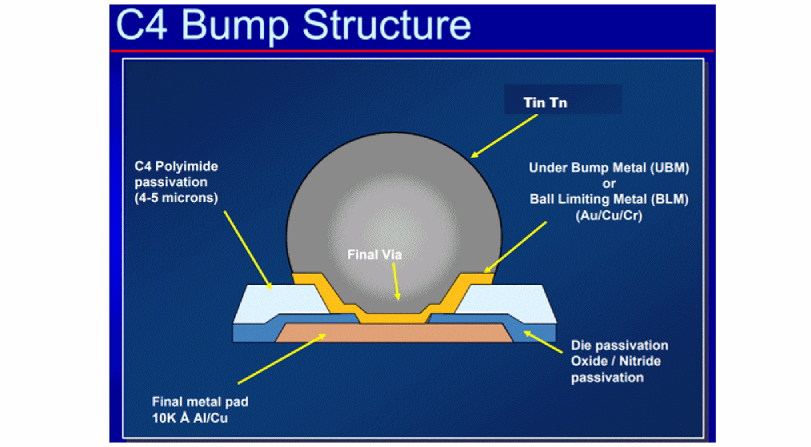
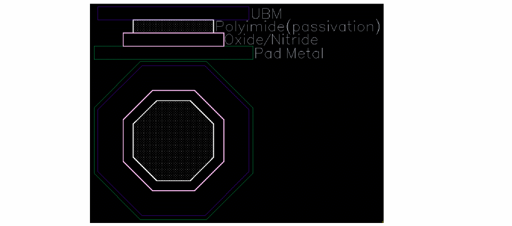

Bumps (IO pads)
To connect the dies, solder balls are placed on the top metal layer or on the backside metal layer. These solder balls and the metal pads beneath them are called bumps (IO Pads). Aligned IO pads between dies are called micro bumps or landing pads.
Cross-die signals and power travel to adjacent dies through micro bumps. IO pads between a die and the package substrate are called flip-chip bumps. These are the solder joints on the IC. Look at the following bump cell to know about its components.

This is a typical bump cell found in a PDK along with the cross-section.

Related Topics
Stackup Information in Substrate
Return to top